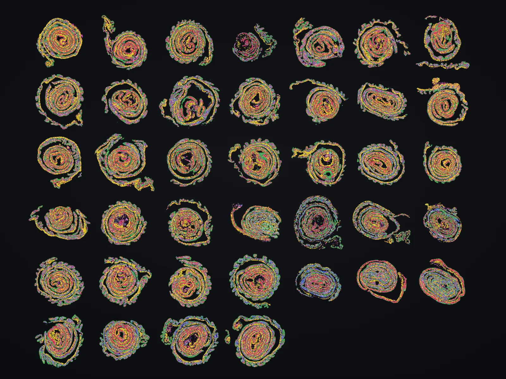
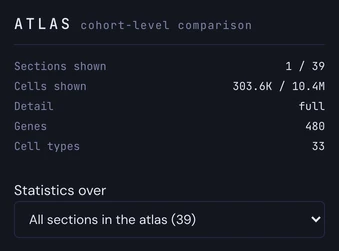
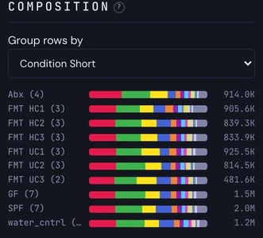
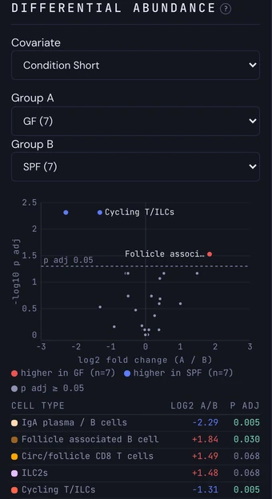
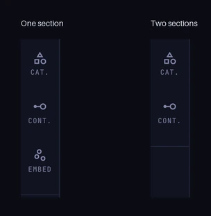

Atlases
Compose harmonized sections into one live montage, and compare conditions over every cell of the cohort.
Tutorial in preparation
This tutorial is being written. The outline below shows what it will cover.
On this page5
An atlas holds many sections in one dataset: the sections of a tissue series, the tissues of a tissue microarray or the animals of a cohort. PointillViz lays the chosen sections side by side in one montage, with one cell-type colouring and one gene list across all of them.
Every tab works on the montage as it does on a single section, as described for 2D data. Two parts belong to atlases only: the section strip, which decides what is on screen, and the Atlas tab, which compares the whole cohort.
The examples on this page use a cohort of 39 sections of rolled mouse colon from germ-free (GF), specific-pathogen-free (SPF), antibiotic-treated (Abx), faecal-transplanted (FMT) and water-control mice.
| I want to… | Read |
|---|---|
| Import sections as one atlas | Build an atlas |
| Choose which sections are on screen | Explore the sections |
| Compare conditions over the whole cohort | The Atlas tab |
| Know what changes in the other tabs | Other tabs |
| Follow one question from start to end | The example |
On the home page, press Upload and then Folder (see Importing). An atlas skips the field-mapping step of a single file: one scan reports what the sections have in common, and one button imports them. Choose what the sections come from.
Folder
Browse to the folder.
Open the folders until the one that holds the sections is on show. The number beside Scan counts its sections. The folder must be on the computer that runs PointillViz.
Press Scan.
Only the metadata is read, a few seconds for every ten files. The report lists one row per section with its cell count and its number of genes, and warns, Gene panels differ, when the sections were measured on different panels.
Check the report.
Each tile of the report can be changed; the defaults are usually right. See the tab The report.
Press Import atlas.
A bar shows the progress and Log the details. The estimate beside the button gives the time and size to expect. When it is done, Open atlas appears.
One file
Choose one .h5ad file of the folder and press Scan. Sections from lists the .obs columns that can split the file: each value becomes one section, named after it. A column with one value per section becomes a Group. None keeps the file as one section.
The rest of the import is the same as for a folder.
SpatialData
A SpatialData store is listed with the tag store. Choose one and press Scan to split it by an .obs column, as for a single file. When a store holds several tables or coordinate systems, Table and Coordinate system appear to choose the ones whose cells are imported.
With nothing chosen, Scan reads every .h5ad file and store of the folder together, one section each.
The report
The report that follows Scan has one tile for each decision. The defaults are guessed from the files.
Sections and genes
Check the sections. Each row is one section; it turns green once that section is imported. Files that could not be read are counted in a red line, N files failed to scan. The atlas keeps the union of every gene panel; in all beside the gene count tells how many genes every section has.
Space
Pick the position and the unit. The .obsm entry that holds each cell's coordinates, and their unit, µm by default.
Cell types
Pick the cell-type column. Its colours and its levels, united over all sections, are what the Types tab shows. A range after the column name means that not every section holds every level. Up to four coarser columns can be ticked as a Cell Type Hierarchy; they are checked across every section.
Groups and the rest
Choose what else to keep. Groups are the per-section values; the first two name the sections in the strip. Overlays become the Cont. tab, Categories the Cats tab and Embedding the embeddings of the viewer. Title and name of the home card are in the Home card tile.
A strip at the bottom of the viewer lists every section as a thumbnail with its name and cell count. It decides which sections form the montage. Adding or removing one re-flows the others, so no gap is left. A new visit opens on the section that was shown last, or on the first one.

ViewSelection
Appears for every atlas.
Choose sections
Show one section. Click its thumbnail. All other sections leave the montage.
Add or remove a section. Ctrl/⌘-click a thumbnail. Shift-click selects every section from the last one clicked up to this one. With Multi switched on, a plain click adds or removes and Shift-click selects a range.
Show every section. Press All. Single goes back to the first selected section. The last section cannot be removed.
A burst of clicks reloads once, about half a second after the last one; the strip says Pending… meanwhile. The count reads, for example, 3 / 39.
Group the sections
Sort by a Group. Group lists the Groups imported with the atlas, and None. A Group sorts the thumbnails into runs, each with a vertical label and a bar in the colour of its value.
Show a whole group. Click the label of a run to show all of its sections.

Layout and detail
Set the columns. Columns is Auto or a fixed number of columns, up to 10.
Draw a sample. Detail starts at Full, every cell. A lower value, for example 10 %, draws a random sample of every section, so that a cohort of millions of cells stays responsive, with about the same share of every cell type. The sample never changes the numbers of the Atlas tab, and Detail goes back to Full on the next visit.

Past the limit. No more than 16 million cells are drawn at once. If a selection asks for more, a chip Capped appears in the strip with the number drawn; select fewer sections for full detail. This cohort has 10.4 million cells in all, so it never reaches the limit.
Hover, keyboard and collapse
Find a section. Hovering a thumbnail highlights that section in the montage and dims the others.
Step through sections. [ and ] show the previous or the next section alone, and wrap around at the ends.
Collapse the strip. The double arrow at the right of the strip folds it away to give the montage more room; press it again to bring it back.
The Atlas tab sits next to Types in the tab strip. It compares the sections as a cohort and paints nothing on the montage. Its numbers come from every cell of every section, computed when the atlas was imported, so Detail never changes them.
Analysis
Appears for every atlas.
Overview and scope
Read what is on screen. The top of the tab lists the sections shown, the cells shown, the Detail, the genes and the cell types of the atlas.
Choose what is compared. Statistics over is All sections in the atlas or Only the sections shown. It applies to the two analyses below.

Composition
Compare the mix of cell types. One bar per section, split by cell type; the twelve most abundant types are shown and the rest are pooled as Other. The cell count is at the right.
Group the bars. Group rows by is Section or a Group. With a Group there is one bar per value, with its number of sections in brackets.

Hover and click. Hovering a segment names the cell type and its share. With one bar per section, clicking a bar shows only that section in the montage; the sections already on screen are marked.
Differential abundance
Compare two groups. Pick a Covariate, then Group A and Group B; each choice shows how many sections it holds. A volcano plot and a ranked table with Cell type, log2 A/B and p adj list the change of every cell type.

Hover a dot of the plot for the cell type, both shares and both p-values.
The table is sorted by the size of the change and shows 25 rows; a p adj below 0.05 is marked. Cell types below 0.1 % in both groups are left out.
Each section counts once, as a replicate: the test is a Welch's t-test on the share of a cell type in each section, adjusted over all cell types by Benjamini–Hochberg. Each group needs at least two sections; otherwise the tab says what to change.
The other tabs read the sections on screen, as described for 2D data. A few differ from a single section.
Tabs
What changes in an atlas.
Types and Genes
Types colours every section with the same cell-type colours.
Genes has one gene list for all sections. Sections that did not measure the selected gene are drawn in a separate Not measured colour, and the legend says in which ones.

Embed and Stats
Embed appears only while exactly one section is shown, because every section has its own embedding.

Stats counts the cells loaded now. A line at the top says how many sections and what sample these are; for the whole cohort, use the Atlas tab.
The same cohort answers a question at three scales: every section at once, one condition at a time and one cell type at a time. The example asks what the microbiome changes in the colon: how do germ-free (GF) mice differ from SPF mice?
See the cohort.
Press All and set Group to Condition Short. The sections sort by condition, and Types shows where each cell type lies.
Look at one condition.
Click the GF label in the strip to show its seven sections, then the SPF label for the other seven.
Compare the mix.
Open Atlas and set Group rows by to Condition Short. One bar per condition shows its cell-type mix.
Test the difference.
In Differential abundance, choose Condition Short as Covariate, GF (7) as Group A and SPF (7) as Group B. Three cell types reach p adj below 0.05: IgA plasma / B cells and Cycling T/ILCs are lower in GF, Follicle associated B cell is higher.
Look at a gene.
Open Genes, search Cd79a, a B-cell marker, and select the 14 sections: click GF · 1, then Shift-click SPF · 7. The gene can then be read section by section, in the order of the strip.